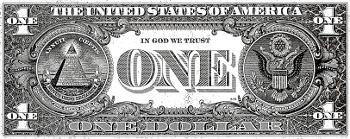
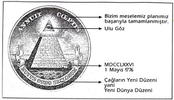

ABD’nin Türk Genelkurmayı içindeki gözü kulağı olan JUSMMAT’ın 1981- 1986 yılları arasında komutanlığını yapan General Pendlaton’un Türk subayları hakkında söyledikleri şeyler oldukça ilgi çekici... ABD’nin Türk Genelkurmayı içindeki etkinliğini gözler önüne seren bu değerlendirmeler, ABD’nin bizim subaylarımızı bizden daha yakından tanıdığını da kanıtlıyor.
“Türk subayları hakkında ne düşünüyorsunuz? Yıllarca birlikte görev yaptığınız Türk subayları hakkında kafanızda nasıl bir imaj oluştu” sorusuna ABD generali Pendlaton şu cevabı veriyor:
“Birlikte mesai yaptığım Türk subaylarından çok etkilendiğimi söyleyebilirim. Çok iyi eğitilmişler. Subaylar da tıpkı erler gibi cesur ve atak. Bu zaten öteden beri bilinir, fakat benim asıl vurgulamak istediğim ellerindeki malzemenin kalitesinin düşüklüğüne karşın asker olarak subaylarınızın kalitesinin yüksekliği. Bunu ben herkesten daha fazla söyleyebilirim ve benim bu söylediğim daha ciddiye alınmalı. Çünkü ben karargâh askeri değilim, yani hizmet süremin yarısı cephede geçti. Türkiye’deki görev süremde en yüksek düzeyde subaylarla çalıştım. Hepsinin ayrı ayrı özellikler var, ama örneğin General Torumtay çok farklı bir subaydır: üstün bir insandır. Türk-Amerikan Ortak Savunma Grubu’nda birlikte görev yaptık. NATO konularını çok iyi bilir. General Öztorun ve General Üruğ çok değerli subaylardır. Çok çalışkandırlar. General Yamak’la üç yıl birlikte çalıştım. General Çulha’yla yakın ilişkideydim. Bunların hepsi mütevazı insanlardır. Zaten Türkiye’de subay çok mütevazı bir yaşam sürer. Generalin aylık kazancı 400 dolar civarındadır. Ne malikânelerde yaşarlar, ne de yüksek sosyetede görünürler. Daha doğrusu görünemezler. Örneğin Ankara’da bir korgeneral bizim standartlarımıza göre çok düşük şartlarla, üç küçük yatak odalı, tek banyolu bir evde yaşar. Ve üstelik düşmanın kendisinden daha iyi silahlarla donatıldığını bile bile birliklerini motive etmek bir subayın görevleri arasındadır.”
ABD’li general, Türkiye’de subay olmanın hiç de avantajlı bir konum oluşturmadığından yanadır. “Peki hiç mi kendine özgü özellikleri yoktur?” ABD’li generalin verdiği cevap, bizim subaylarımızın yaşantılarıyla ne kadar yakından ilgili olduklarının da bir göstergesidir.
(*) Türkiye’deki Amerika, Abdullah Özkan, Emre Yayınları, 1993.

Kâğıt 1 doların arkasındaki masonik piramit

Piramidin açılımı
Kaynak: Çeteleşme, Talat Turhan, Akyüz Yayıncılık, 1993.